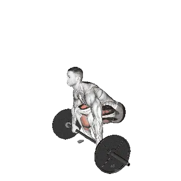

中级平均重量
一般中级训练者的参考值。
男性
366 lb
女性
169 lb
垫高硬拉平均重量 [1RM]
| 等级 | ||
|---|---|---|
| 初学者 | 199 lb | 74 lb |
| 初级者 | 274 lb | 116 lb |
| 中级者 | 366 lb | 169 lb |
| 进阶者 | 472 lb | 233 lb |
| 菁英 | 584 lb | 303 lb |
注：这些标准是以一般训练者的 1RM 为基准估算。体重、年龄等个人因素都可能造成差异。详细数据请参考下方表格。
垫高硬拉力量标准(lb)
男性按体重(lb)数据 [1RM]
| 体重 | 初学者 | 初级者 | 中级者 | 进阶者 | 菁英 |
|---|---|---|---|---|---|
| 110 | 111 | 159 | 219 | 289 | 364 |
| 120 | 127 | 178 | 241 | 314 | 393 |
| 130 | 143 | 197 | 263 | 339 | 420 |
| 140 | 158 | 215 | 284 | 362 | 446 |
| 150 | 173 | 232 | 304 | 385 | 472 |
| 160 | 188 | 249 | 323 | 407 | 496 |
| 170 | 202 | 266 | 342 | 428 | 519 |
| 180 | 216 | 282 | 360 | 448 | 541 |
| 190 | 230 | 298 | 378 | 468 | 563 |
| 200 | 243 | 313 | 395 | 487 | 584 |
| 210 | 256 | 328 | 412 | 506 | 604 |
| 220 | 269 | 342 | 428 | 524 | 624 |
| 230 | 282 | 356 | 444 | 541 | 643 |
| 240 | 294 | 370 | 459 | 558 | 661 |
| 250 | 306 | 384 | 474 | 574 | 679 |
| 260 | 318 | 397 | 489 | 591 | 697 |
| 270 | 330 | 410 | 503 | 606 | 714 |
| 280 | 341 | 422 | 517 | 622 | 730 |
| 290 | 352 | 435 | 531 | 637 | 746 |
| 300 | 363 | 447 | 544 | 651 | 762 |
| 310 | 374 | 459 | 557 | 666 | 778 |
男性按年龄数据 [1RM]
| 年龄 | 初学者 | 初级者 | 中级者 | 进阶者 | 菁英 |
|---|---|---|---|---|---|
| 15 | 169 | 234 | 312 | 402 | 498 |
| 20 | 194 | 267 | 357 | 460 | 570 |
| 25 | 199 | 274 | 366 | 472 | 584 |
| 30 | 199 | 274 | 366 | 472 | 584 |
| 35 | 199 | 274 | 366 | 472 | 584 |
| 40 | 199 | 274 | 366 | 472 | 584 |
| 45 | 189 | 260 | 348 | 447 | 554 |
| 50 | 177 | 244 | 326 | 420 | 520 |
| 55 | 164 | 226 | 302 | 388 | 481 |
| 60 | 150 | 206 | 275 | 354 | 439 |
| 65 | 135 | 186 | 249 | 320 | 397 |
| 70 | 121 | 167 | 223 | 287 | 356 |
| 75 | 108 | 150 | 200 | 257 | 318 |
| 80 | 97 | 134 | 179 | 230 | 285 |
| 85 | 87 | 120 | 160 | 206 | 255 |
| 90 | 78 | 108 | 144 | 186 | 230 |
女性按体重(lb)数据 [1RM]
| 体重 | 初学者 | 初级者 | 中级者 | 进阶者 | 菁英 |
|---|---|---|---|---|---|
| 90 | 50 | 84 | 128 | 182 | 242 |
| 100 | 56 | 91 | 137 | 193 | 254 |
| 110 | 61 | 98 | 145 | 202 | 265 |
| 120 | 66 | 104 | 153 | 212 | 276 |
| 130 | 71 | 110 | 161 | 220 | 286 |
| 140 | 76 | 116 | 168 | 228 | 295 |
| 150 | 80 | 122 | 174 | 236 | 304 |
| 160 | 85 | 127 | 181 | 244 | 312 |
| 170 | 89 | 132 | 187 | 251 | 320 |
| 180 | 93 | 137 | 193 | 257 | 328 |
| 190 | 97 | 142 | 198 | 264 | 335 |
| 200 | 101 | 146 | 203 | 270 | 342 |
| 210 | 104 | 151 | 209 | 276 | 349 |
| 220 | 108 | 155 | 214 | 282 | 355 |
| 230 | 111 | 159 | 218 | 287 | 361 |
| 240 | 115 | 163 | 223 | 292 | 367 |
| 250 | 118 | 167 | 228 | 298 | 373 |
| 260 | 121 | 171 | 232 | 303 | 379 |
女性按年龄数据 [1RM]
| 年龄 | 初学者 | 初级者 | 中级者 | 进阶者 | 菁英 |
|---|---|---|---|---|---|
| 15 | 63 | 98 | 144 | 198 | 258 |
| 20 | 72 | 113 | 165 | 227 | 295 |
| 25 | 74 | 116 | 169 | 233 | 303 |
| 30 | 74 | 116 | 169 | 233 | 303 |
| 35 | 74 | 116 | 169 | 233 | 303 |
| 40 | 74 | 116 | 169 | 233 | 303 |
| 45 | 70 | 110 | 160 | 221 | 287 |
| 50 | 66 | 103 | 150 | 207 | 270 |
| 55 | 61 | 95 | 139 | 192 | 249 |
| 60 | 56 | 87 | 127 | 175 | 228 |
| 65 | 50 | 78 | 115 | 158 | 206 |
| 70 | 45 | 70 | 103 | 142 | 184 |
| 75 | 40 | 63 | 92 | 127 | 165 |
| 80 | 36 | 56 | 82 | 113 | 147 |
| 85 | 32 | 50 | 74 | 102 | 132 |
| 90 | 29 | 45 | 67 | 92 | 119 |
注：一般健身房的标准杠铃通常为44 lb。
用 Shiba App 记录与分析
集中查看重量、次数与进步变化。
表格说明
| 等级 | 说明 | 分布 |
|---|---|---|
| 初学者 | 掌握正确动作，并持续训练至少 1 个月。 | 后 5% |
| 初级者 | 持续规律训练至少 6 个月。 | 前 80% |
| 中级者 | 持续规律训练至少 2 年。 | 前 50% |
| 进阶者 | 持续规律训练超过 5 年。 | 前 20% |
| 菁英 | 针对该动作专项训练超过 5 年。 | 前 5% |